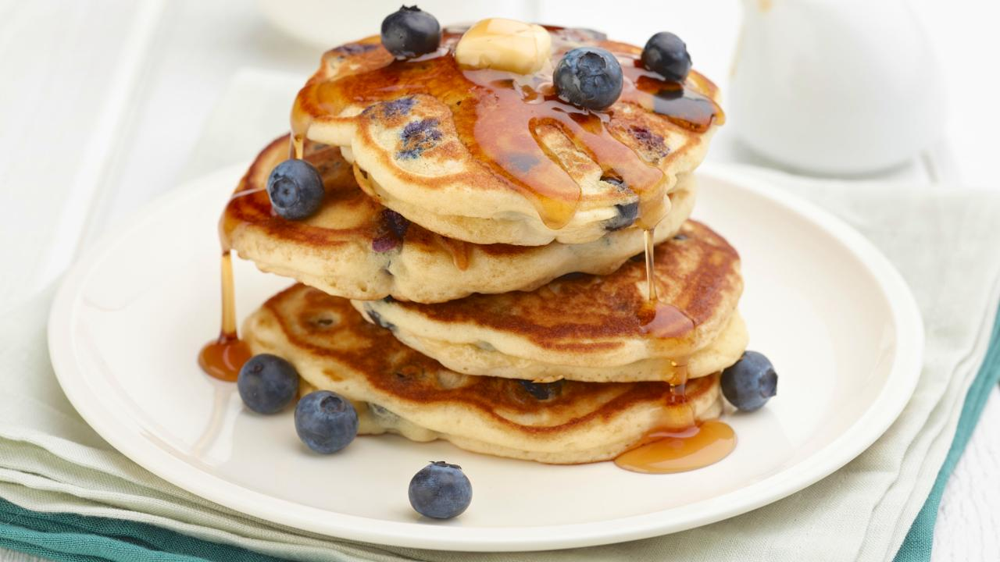

Blueberry Pancakes

Blueberry pancakes are a wonderful treat when fresh blueberries are in season. But don't limit your enjoyment of these tender, golden cakes to summer; frozen blueberries make them a year-round treat
Ingedients
- 1 3/4 cups all-purpose flour
- 2 tbsp sugar
- 1 tsp baking powder
- 1/2 tsp vanilla extract
- 1 1/2 cups fresh or frozen blueberries
- 1/2 tsp salt
- 2 large eggs
- 1 cup milk, plus more if needed
- 1 cup sour cream
- 1 stick butter, melted
- 1/2 tsp lemon zest
Make it!
- Sift the flour, sugar, baking powder, baking soda and salt into a large mixing bowl. In a separate large bowl, lightly whisk the eggs. Add the milk, sour cream, half the melted butter and the vanilla, whisking to blend. Make a well in the dry ingredients and pour the egg mixture into it. Whisk the ingredients together just until blended. Fold the blueberries and lemon zest into the batter.
- Heat a large skillet or griddle over medium heat and coat with some of the remaining melted butter. For each pancake, pour about 1/4 cup of the batter into the hot skillet. Cook 3 or 4 pancakes at a time, depending on the size of the skillet. If the batter seems too thick, thin it with 1 to 2 tablespoons milk. When bubbles begin to form and "pop" on the pancake's surface, after about 1 minute, and the outer edge looks done, flip it over and cook briefly for about 30 seconds on the other side.